9 Week 9: Observing Environmental Change (III)
In this tutorial, we will focus on analyzing eddy covariance data provided by FLUXNET. You will download and process meteorological and carbon flux observations to address key questions, including:
- Which meteorological variables drive the variability in net ecosystem exchange?
- What are the characteristic time lags involved?
- Are evapotranspiration and precipitation dynamically linked?
- Are there any trends in ecosystem resilience?
The analysis will first be conducted for a site in the Amazon Basin, followed by a site in Australia.
9.1 Downloading data
- Visit the FLUXNET Data Portal
- Click on
Download FLUXNET2015 Dataset - Create an account and sign in
- Select
FLUXNET2015 Tier 2 Data - Select SUBSET data product
- Select
BR-Sa3, a FLUXNET site located in the Brazilian Amazon. - Download, unzip, and move folder to a data folder in your working directory.
- The files that you downloaded are in CSV format. You can open them in R like this:
data.sa3 <- read.csv("/global/home/hpc5112/ENSC430/shared_files/FLX_BR-Sa3_FLUXNET2015_SUBSET_2000-2004_1-4/FLX_BR-Sa3_FLUXNET2015_SUBSET_DD_2000-2004_1-4.csv")
data <- data.sa3[250:1500,] # We will use a subset that excludes dates with unreasonable values- Have a look at the column names:
colnames(data)## [1] "TIMESTAMP" "TA_F" "TA_F_QC"
## [4] "SW_IN_POT" "SW_IN_F" "SW_IN_F_QC"
## [7] "LW_IN_F" "LW_IN_F_QC" "VPD_F"
## [10] "VPD_F_QC" "PA_F" "PA_F_QC"
## [13] "P_F" "P_F_QC" "WS_F"
## [16] "WS_F_QC" "USTAR" "USTAR_QC"
## [19] "NETRAD" "NETRAD_QC" "PPFD_IN"
## [22] "PPFD_IN_QC" "PPFD_OUT" "PPFD_OUT_QC"
## [25] "SW_OUT" "SW_OUT_QC" "LW_OUT"
## [28] "LW_OUT_QC" "CO2_F_MDS" "CO2_F_MDS_QC"
## [31] "TS_F_MDS_1" "TS_F_MDS_1_QC" "SWC_F_MDS_1"
## [34] "SWC_F_MDS_1_QC" "G_F_MDS" "G_F_MDS_QC"
## [37] "LE_F_MDS" "LE_F_MDS_QC" "LE_CORR"
## [40] "LE_CORR_25" "LE_CORR_75" "LE_RANDUNC"
## [43] "H_F_MDS" "H_F_MDS_QC" "H_CORR"
## [46] "H_CORR_25" "H_CORR_75" "H_RANDUNC"
## [49] "NEE_VUT_REF" "NEE_VUT_REF_QC" "NEE_VUT_REF_RANDUNC"
## [52] "NEE_VUT_25" "NEE_VUT_50" "NEE_VUT_75"
## [55] "NEE_VUT_25_QC" "NEE_VUT_50_QC" "NEE_VUT_75_QC"
## [58] "RECO_NT_VUT_REF" "RECO_NT_VUT_25" "RECO_NT_VUT_50"
## [61] "RECO_NT_VUT_75" "GPP_NT_VUT_REF" "GPP_NT_VUT_25"
## [64] "GPP_NT_VUT_50" "GPP_NT_VUT_75" "RECO_DT_VUT_REF"
## [67] "RECO_DT_VUT_25" "RECO_DT_VUT_50" "RECO_DT_VUT_75"
## [70] "GPP_DT_VUT_REF" "GPP_DT_VUT_25" "GPP_DT_VUT_50"
## [73] "GPP_DT_VUT_75" "RECO_SR" "RECO_SR_N"The meaning and units for the variables are documented here. The definition of the suffixes are provided here. The variables most relevant for this course are listed below.
Meteorological data:
- TA = Air temperature (Degrees Celsius)
- SW_IN = Downwelling Shortwave radiation (W m-2)
- LW_IN = Downwelling longwavetwave radiation (W m-2)
- VPD = Vapor Pressure Deficit (hPa)
- P = Precipitation (mm)
- WS = windspeed (m s-1)
- NETRAD = surface net radiation (W m-2)
- PPFD Photosynthetic Photon Flux Density (\(\mu\)mol Photon m-2 s-1)
Turbulent heat fluxes:
- LE = latent heat (W m-2)
- H = sensible heat (W m-2)
Carbon fluxes:
- GPP = Gross Primary Productivity (\(\mu\)mol CO2 m-2 s-1)
- RECO = Ecosystem Respiration (\(\mu\)mol CO2 m-2 s-1)
- NEE = Net Ecosystem Exchange (NEE = RECO - GPP) (\(\mu\)mol CO2 m-2 s-1)
Observed time series may contain gaps. To address this, missing data can be filled using proxy datasets (e.g., ERA reanalysis) or statistical methods. The subscript \(F\) (e.g. TA_F) indicates that the data have been gap-filled. Data collection and gap-filling methods vary across sites, so not all columns contain data. Let’s read in the available variables and create a time series.
tas <- ts(data$TA_F)
rsds <- ts(data$SW_IN_F)
rlds <- ts(data$LW_IN_F)
vpd <- ts(data$VPD_F)
pr <- ts(data$P_F)
ws <- ts(data$WS_F)
hfls <- ts(data$LE_F_MDS)
hfss <- ts(data$H_F_MDS)
nee <- ts( data$NEE_VUT_REF)
gpp <- ts( data$GPP_DT_VUT_REF)
time.series <- ts.union(tas, rsds, rlds, vpd, pr, ws, hfls, hfss, nee, gpp)
plot(time.series)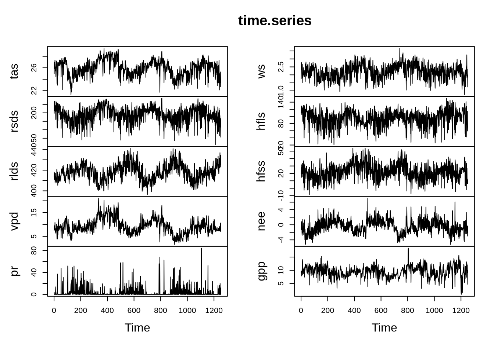
9.2 Processing data
- Compute detrended anomalies. To do this efficiently, we define a function that we can apply to each variable.
detrend.anomalies.fun <- function(dates, values) {
df <- data.frame(dates, values)
# (1) Anomalies
# Extract day and month to identify each day of the year
df$day_of_year <- format(df$dates, "%m-%d")
# Calculate the mean for each day of the year across all years
daily_means <- aggregate(values ~ day_of_year,
data = df,
FUN = mean,
na.rm = TRUE)
# Merge the daily means back to the original data to calculate anomalies
df <- merge(df,
daily_means,
by = "day_of_year",
suffixes = c("", "_mean"))
# Calculate anomalies by subtracting the daily mean from each value
df$anomaly <- df$values - df$values_mean
# Sort by date
df <- df[order(df$date), ]
# (2) Detrend
time <- 1:length(dates)
linear.trend <- lm(formula = df$anomaly ~ time, na.action = na.exclude)
detr.anom <- residuals(linear.trend)
result <- ts(detr.anom)
return(result)
}- Apply this function to the different variables and put them all into a single time series
dates <- as.Date(as.character(data$TIMESTAMP), format = "%Y%m%d")
tas <- detrend.anomalies.fun(dates, tas)
rsds <- detrend.anomalies.fun(dates, rsds)
rlds <- detrend.anomalies.fun(dates, rlds)
vpd <- detrend.anomalies.fun(dates, vpd)
pr <- detrend.anomalies.fun(dates, pr)
ws <- detrend.anomalies.fun(dates, ws)
hfls <- detrend.anomalies.fun(dates, hfls)
hfss <- detrend.anomalies.fun(dates, hfss)
nee <- detrend.anomalies.fun(dates, nee)
gpp <- detrend.anomalies.fun(dates, gpp)
time.series <- ts.union(tas, rsds, rlds, vpd, pr, ws, hfls, hfss, nee, gpp)
plot(time.series)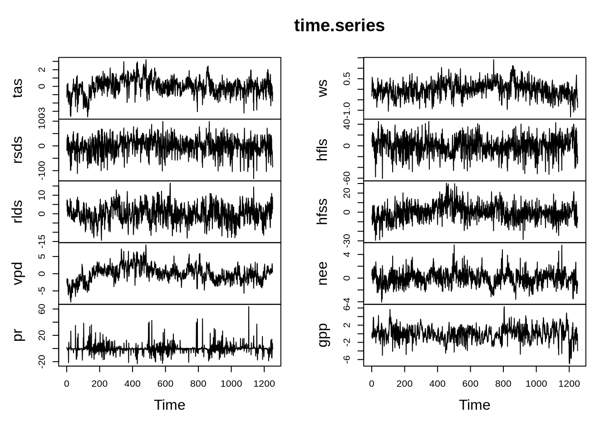
9.3 Analysis
9.3.1 Granger causality
- Conduct a Granger causality test that evaluates what meteorological variables drive net ecosystem exchange. To do this efficiently, we will create a function that shows how the p-value of a Granger causality test varies with increasing time lag:
grangerPvaluesLags.fun <- function(x, y) {
tsDat <- ts.union(x, y)
# Set the maximum lag to test
max_lag <- 14
p_values <- numeric(max_lag)
# Loop over each lag and calculate the Granger causality p-value
for (lag in 1:max_lag) {
tsVAR <- vars::VAR(tsDat, p = lag)
causality_result <- causality(tsVAR, cause = "x")
p_values[lag] <- causality_result$Granger$p.value
}
return(ts(p_values))
}- Let’s apply this function to evaluate how the Granger-causality p-values change as time lags increase
tas.p <- grangerPvaluesLags.fun(x = tas, y = nee)
rsds.p <- grangerPvaluesLags.fun(x = rsds, y = nee)
rlds.p <- grangerPvaluesLags.fun(x = rlds, y = nee)
vpd.p <- grangerPvaluesLags.fun(x = vpd, y = nee)
pr.p <- grangerPvaluesLags.fun(x = pr, y = nee)
ws.p <- grangerPvaluesLags.fun(x = ws, y = nee)
time.series <- ts.union(tas.p, rsds.p, rlds.p, vpd.p, pr.p, ws.p)
plot(time.series)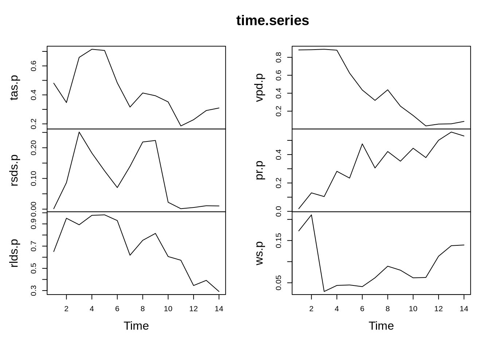
- Get the minimum p-value and corresponding time lag:
min.p <- apply(time.series, 2, min)
lag.p <- apply(time.series, 2, which.min)
df <- data.frame(min.p, lag.p)
df <- df[order(df$min.p), ] # Sort by p-value
print(df)## min.p lag.p
## rsds.p 0.00140334 1
## pr.p 0.01866099 1
## ws.p 0.02932916 3
## vpd.p 0.03524258 11
## tas.p 0.18581284 11
## rlds.p 0.29179068 14Are there any meteorological variables that do not Granger-cause net ecosystem exchange?
Using Granger causality, explore to what extent precipitation (pr) and latent heat flux (hfls) are dynamically coupled:
pr.gc.hfls <- grangerPvaluesLags.fun(x = pr, y = hfls)
hfls.gc.pr <- grangerPvaluesLags.fun(x = hfls, y = pr)
time.series <- ts.union(pr.gc.hfls, hfls.gc.pr)
plot(time.series)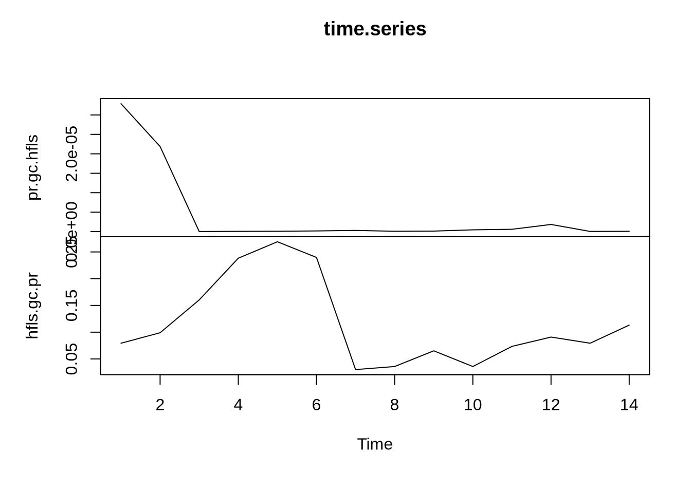
- Judging from the figure above, are latent heat flux and precipitation dynamically linked? Verify your answer by calculating the minimum p-values of both variables:
min.p <- apply(time.series, 2, min)
lag.p <- apply(time.series, 2, which.min)
df <- data.frame(min.p, lag.p)
df <- df[order(df$min.p), ] # Sort by p-value
print(df)## min.p lag.p
## pr.gc.hfls 1.377210e-08 3
## hfls.gc.pr 3.012185e-02 79.3.2 Variance decomposition
- Let’s decompose the variance and see which variable has the most influential one
tsDat <- ts.union(tas, rsds, rlds, vpd, pr, ws, nee)
var_model <- VAR(tsDat, p = 7)
# Perform variance decomposition
variance_decomp <- fevd(var_model, n.ahead=7)
# Plot
n <- nrow(variance_decomp$nee)
y <- variance_decomp$nee[n,]
pie(y)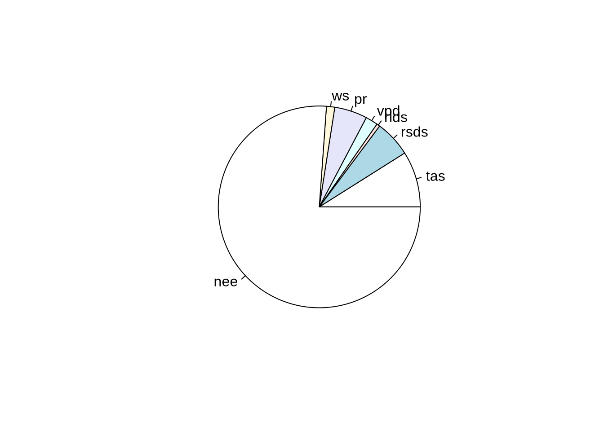
- What does this pie chart tell you?
9.3.3 Ecosystem Resilience
- Run the Univariate Early Warning Signal Assessment for GPP to evaluate how ecosystem resilience is changing.
library(EWSmethods)
data <- gpp
time <- 1:length(data)
data <- data.frame(time, data)
rolling_ews_eg <- uniEWS(
data = data,
metrics = c("ar1", "SD"),
method = "rolling",
winsize = 50
)
plot(rolling_ews_eg, y_lab = "Density")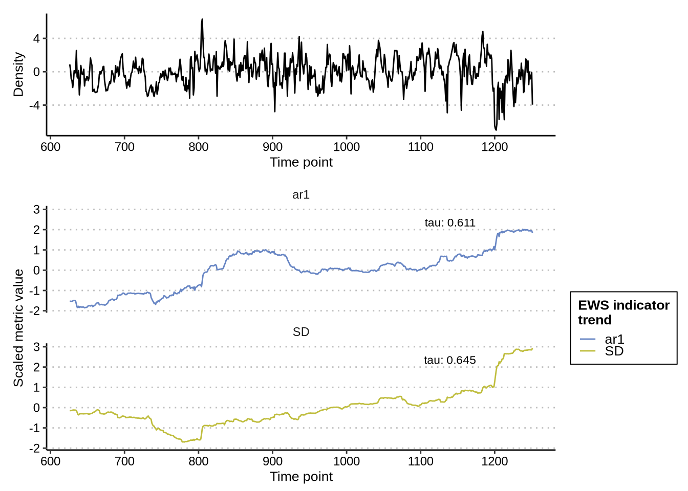
- Interpret your result
9.4 Australia
- Next, repeat the same analysis for the Australian site
AU-GWW.
data <- read.csv("/global/home/hpc5112/ENSC430/shared_files/FLX_AU-GWW_FLUXNET2015_SUBSET_2013-2014_1-4/FLX_AU-GWW_FLUXNET2015_SUBSET_DD_2013-2014_1-4.csv")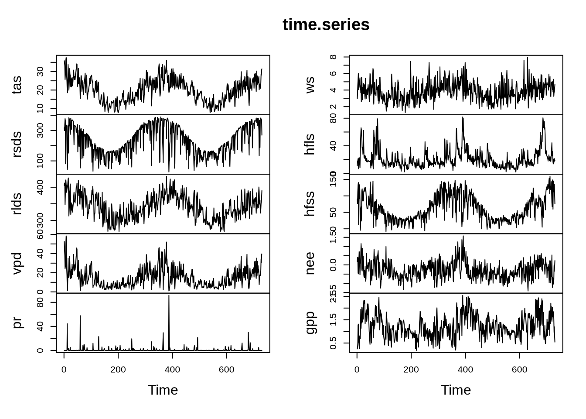
- Compute detrended anomalies.
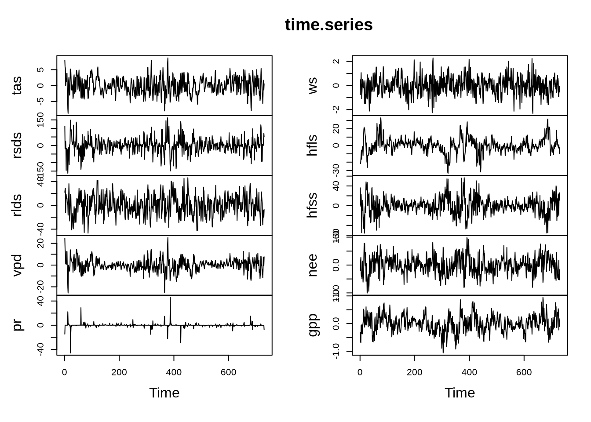
- Conduct a Granger causality test that evaluates what meteorological variables drive net ecosystem exchange.
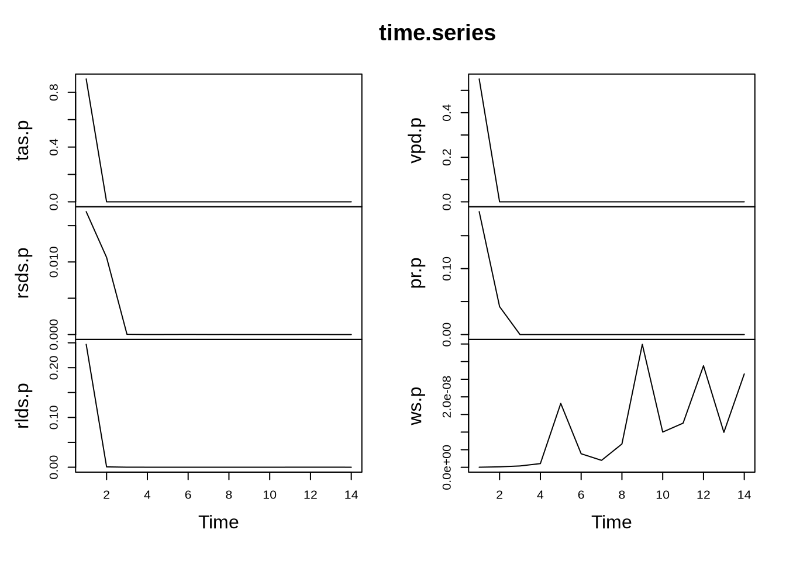
- Get the minimum p-value and corresponding time lag:
## min.p lag.p
## tas.p 0.000000e+00 2
## vpd.p 1.110223e-14 13
## pr.p 5.324630e-13 12
## ws.p 2.726486e-11 1
## rsds.p 1.115607e-08 14
## rlds.p 8.828086e-06 14Are there any meteorological variables that do not Granger-cause net ecosystem exchange?
Using Granger causality, explore to what extent precipitation (pr) and latent heat flux (hfls) are dynamically coupled:
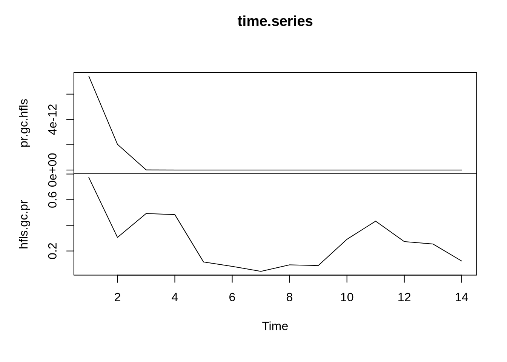
- Judging from the figure above, are latent heat flux and precipitation dynamically linked? Verify your answer by calculating the minimum p-values of both variables:
## min.p lag.p
## pr.gc.hfls 0.00000000 4
## hfls.gc.pr 0.04107451 7- Let’s decompose the variance and see which variable has the most influential one
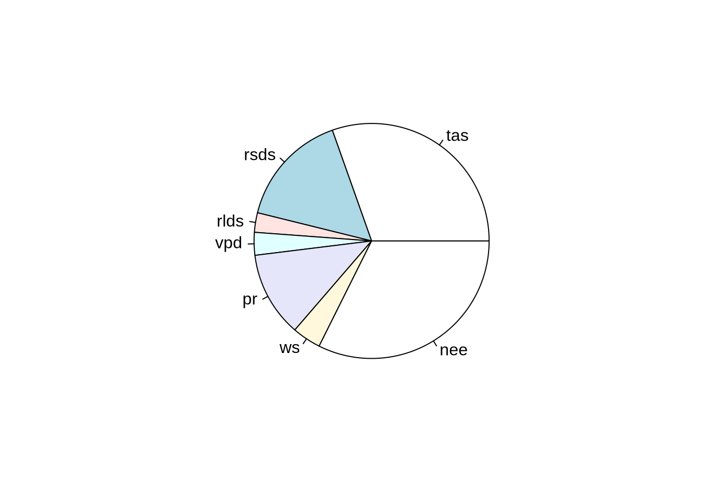
What does this pie chart tell you?
Run the Univariate Early Warning Signal Assessment for GPP to evaluate how ecosystem resilience is changing.
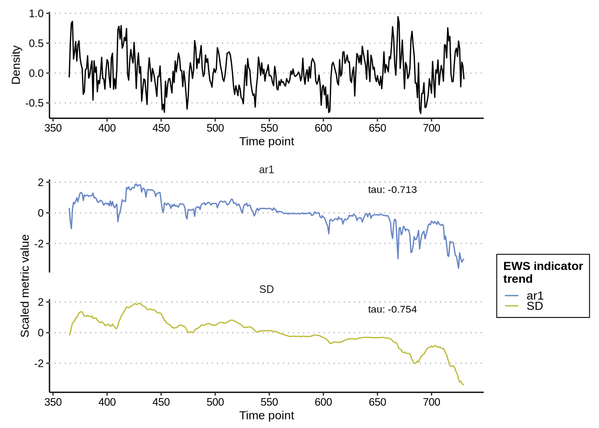
- Interpret your result